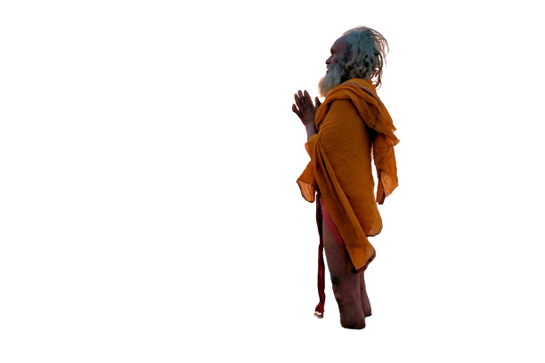
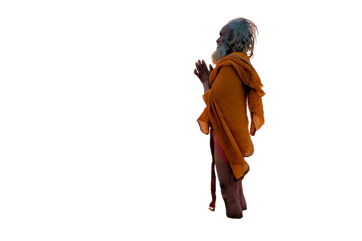

VARANASI
History
Varanasi (Vārāṇasī; [ʋaːˈraːɳəsi]; also Banaras or Benares (Banāras; [bəˈnaːrəs] (listen)),[10][11] and Kashi.[12][13][a]) is a city on the Ganges river in northern India that has a central place in the traditions of pilgrimage, death, and mourning in the Hindu world.[15][b] The city has a syncretic tradition of Muslim artisanship that underpins its religious tourism.[18] Located in the middle-Ganges valley in the southeastern part of the state of Uttar Pradesh, Varanasi lies on the left bank of the river. It is 692 kilometres (430 mi) to the southeast of India's capital New Delhi and 320 kilometres (200 mi) to the east of the state capital, Lucknow. It lies 121 kilometres (75 mi) downstream of Allahabad (officially Prayagraj), where the confluence with the Yamuna river is another major Hindu pilgrimage site.
Varanasi is one of the world's oldest continually inhabited cities.[19] Kashi, its ancient name, was associated with a kingdom of the same name of 2,500 years ago. The Lion capital of Ashoka at nearby Sarnath has been interpreted to be a commemoration of the Buddha's first sermon there in the fifth century BCE.[20][21] In the 8th century, Adi Shankara established the worship of Shiva as an official sect of Varanasi. Since ancient times, the city has been an important centre of Hindu devotion, pilgrimage, mysticism and poetry contributing to its cultural importance.[22] Tulsidas wrote his Awadhi language epic, the Ramcharitmanas, a Bhakti movement reworking of the Sanskrit Ramayana, in Varanasi. Several other major figures of the Bhakti movement were born in Varanasi, including Kabir and Ravidas.[23] In the 16th century, Rajput nobles in the service of the courts and armies of the Mughal emperor Akbar, sponsored the building or further enhancement of the major Shiva temple in the city; they also built other temples, all displaying an empire-wide architectural style.[24][25] Under the Treaty of Faizabad, the East India Company acquired Benares in 1775,[26][27] the city later successively becoming a part of the Benares Division in the Ceded and Conquered Provinces, the North-Western Provinces, and the United Provinces, and after India's independence of Uttar Pradesh.[28]
Ghats
The Ghats in Varanasi are world-renowned embankments made in steps of stone slabs along the river bank where pilgrims perform ritual ablutions. The ghats are an integral complement to the Hindu concept of divinity represented in physical, metaphysical, and supernatural elements.[151] Varanasi has at least 84 ghats, most of which are used for bathing by pilgrims and spiritually significant Hindu puja ceremony, while a few are used exclusively as Hindu cremation sites.[152][153][154] Steps in the ghats lead to the banks of Ganges, including the Dashashwamedh Ghat, the Manikarnika Ghat, the Panchganga Ghat, and the Harishchandra Ghat, where Hindus cremate their dead. Many ghats are associated with Hindu legends and several are now privately owned.[155] Many of the ghats were constructed under the patronage of the Marathas, Shindes (Scindias), Holkars, Bhonsles, and Peshwas. Most are bathing ghats, while others are used as cremation sites. A morning boat ride on the Ganges across the ghats is a popular tourist attraction. The extensive stretches of ghats in Varanasi enhance the riverfront with a multitude of shrines, temples, and palaces built "tier on the tier above the water's edge".[40] The Dashashwamedh Ghat is the main and probably the oldest ghat of Varanasi located on the Ganges, close to the Kashi Vishwanath Temple. It is believed that Brahma created this ghat to welcome Shiva and sacrificed ten horses during the Dasa-Ashwamedha yajna performed there. Above and adjacent to this ghat, there are also temples dedicated to Sulatankesvara, Brahmesvara, Varahesvara, Abhaya Vinayaka, Ganga (the Ganges), and Bandi Devi, which are all important pilgrimage sites. A group of priests performs "Agni Pooja" (Sanskrit: "Worship of Fire") daily in the evening at this ghat as a dedication to Shiva, Ganga, Surya (Sun), Agni (Fire), and the entire universe. Special aartis are held on Tuesdays and on religious festivals.[153] The Manikarnika Ghat is the Mahasmasana, the primary site for Hindu cremation in the city. Adjoining the ghat, there are raised platforms that are used for death anniversary rituals. According to a myth, it is said that an earring of Shiva or his wife Sati fell here. Fourth-century Gupta period inscriptions mention this ghat. However, the current ghat as a permanent riverside embankment was built in 1302 and has been renovated at least three times throughout its existence.[153] The Jain Ghat is believed to birthplace of Suparshvanatha (7th Tirthankara) and Parshvanatha (23rd tirthankara). The Jain Ghat or Bachraj Ghat is a Jain Ghat and has three Jain Temples located on the banks of the River. It is believed that the Jain Maharajas used to own these ghats. Bachraj Ghat has three Jain temples near the river's banks, and one them is a very ancient temple of Tirthankara Suparswanath.
Kashi Vishwanath Dham
The Kashi Vishwanath Temple, on the Ganges, is one of the 12 Jyotirlinga Shiva temples in Varanasi.[157] The temple has been destroyed and rebuilt several times throughout its existence. The Gyanvapi Mosque, which is adjacent to the temple, is the original site of the temple.[158] The temple, which is also known as the Golden Temple,[159] was built in 1780 by Queen Ahilyabai Holkar of Indore. The two pinnacles of the temple are covered in gold and were donated in 1839 by Ranjit Singh, the ruler of Punjab. The dome is scheduled to receive gold plating through a proposed initiative of the Ministry of Culture and Religious Affairs of Uttar Pradesh. Numerous rituals, prayers, and aartis are held daily at the temple between 02:30 and 23:00.[160]
Sarnath
Sarnath is located 10 kilometres north-east of Varanasi near the confluence of the Ganges and the Varuna rivers in Uttar Pradesh, India. The deer park in Sarnath is where Gautama Buddha first taught the Dharma, and where the Buddhist Sangha came into existence through the enlightenment of Kondanna.[181]
The city is mentioned by the Buddha as one of the four places of pilgrimage to which his devout followers should visit. It was also the site of the Buddha's Dhammacakkappavattana Sutta, which was his first teaching after attaining enlightenment, in which he taught the Four Noble Truths and the teachings associated with it.[181]
IIT (BHU) Varanasi
IIT (BHU) Varanasi has formerly been known as the Banaras Engineering College (BENCO), the College of Mining and Metallurgy (MINMET), the College of Technology (TECHNO) and the Institute of Technology, Banaras Hindu University (IT-BHU). Its establishment is intimately linked with that of the Banaras Hindu University (BHU). The first convocation ceremony at BHU was held on 2 December 1920.[5] BHU has the credit of first starting degree classes in Mechanical Engineering, Electrical Engineering, Metallurgy and Pharmaceutics, thanks to the foresight of its founder, Pt. Madan Mohan Malaviya. The Department of Geology was started under BENCO in 1920. Courses in Mining and Metallurgy were introduced by the Geology Department. The Department of Industrial Chemistry was started in July, 1921. In 1923, Mining and Metallurgy were established as separate departments and in 1944, they were raised to the status of a college forming the College of Mining and Metallurgy (MINMET).[5] IIT (BHU) commemorated on a 2019 stamp of India. In 1968, BENCO, TECHNO and MINMET were merged and the Institute of Technology (IT-BHU) was established integrating the departments of Mechanical Engineering, Electrical Engineering, Civil and Municipal Engineering, Mining Engineering, Metallurgical Engineering, Chemical Engineering and Technology, Silicate Technology and Pharmaceutics. The Department of Silicate Technology subsequently became the Department of Ceramic Engineering. A Department of Electronics Engineering was also established.[5] The departments of Applied Physics, Applied Mathematics and Applied Chemistry were established in 1985.